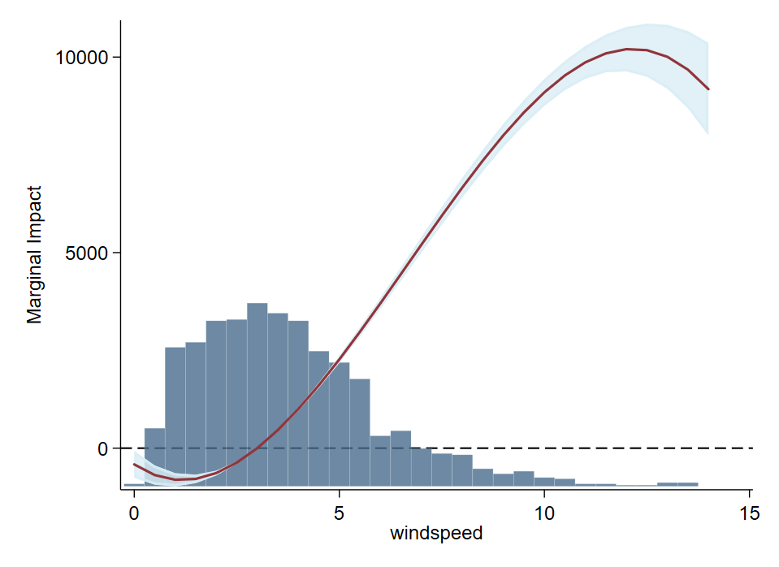
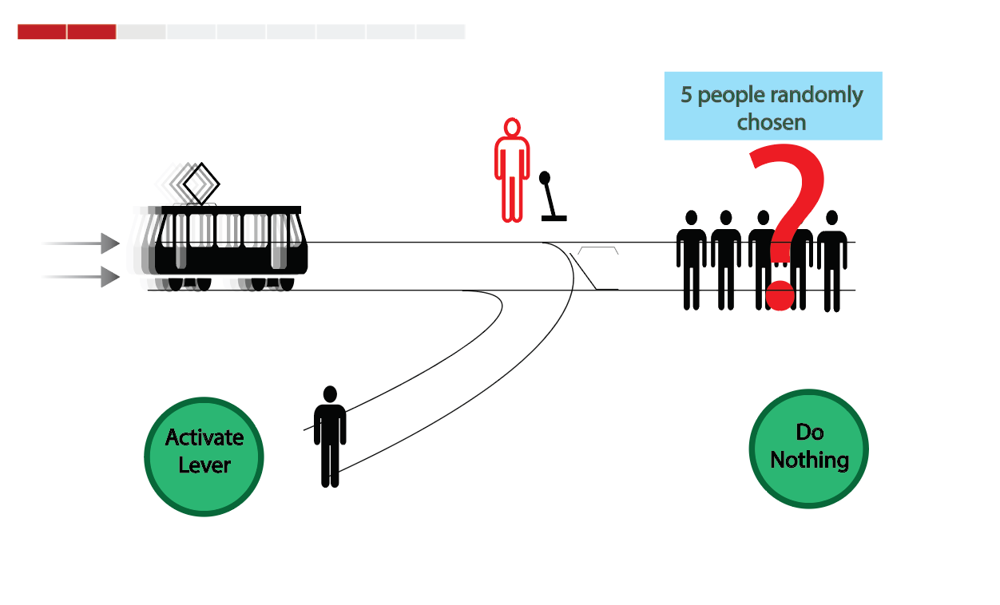

Post-estimation Stata function to plot polynomial dose-response curves. Relies on Stata's built-in predictnl function to compute marginal effects when the dose-response follows a polynomial form of any order. Supports an optional histogram of the underlying support. The user can set the reference point and choose to plot either in-sample or outside the data support — the latter being especially relevant for counterfactual analysis and projected climate impact work.

Program to identify implicit ethnicity bias through "trolley dilemma" decisions. Timed basic trolley dilemma with the option to assign specific ethnicity. Includes the bridge ("fat man") variant. Written with OpenSesame; easily deployable by surveyors on tablets or smartphones.
